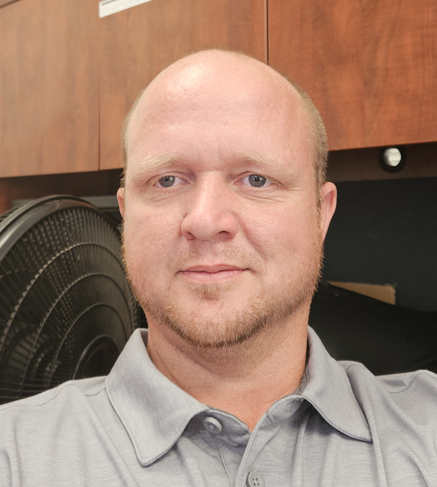

Russell Benson

Summary: (or objective statement)
Software Engineer with several years of programming experience.
Education: (list degrees, schools and dates)
Bachelor of Science in Software Engineering
University of Phoenix - Phoenix, AZ
Graduated in May of 2015
Work Experience: (list job titles, employers, dates, and responsibilities
Desktop IT Support Technician
KT Black | Lubbock, TX
07/15/2024 to Currently Employed Here
- Set up workstations by connecting and testing monitors and other peripherals
- Connected and tested printers
- Imaged / Installed OS
Associate IS Support Technician
KT Black / Covenant | Lubbock, TX
June 2020 to February 2024
- Provided help desk IT support for the Providence St. Joseph health system
- Support included triage, technical and administrative support
Web Developer
Arlington Community Chamber of Commerce | Arlington, OR
August 2015 to November 2017
- Built and maintained a fully functioning website from scratch
- Utilized visual studio IDE to build the website using ASP.NET / C#
Skills: (list relevant skills or areas of expertise
PHP, Python, C#, Java, Assembly & SQL
JavaScript, HTML and CSS
Awards, certifications, or other achievements (list any relevant awards, certifications, or other accomplishments)
placeholder for links to other pages like: hobbies, contact
Contact
Hobbies